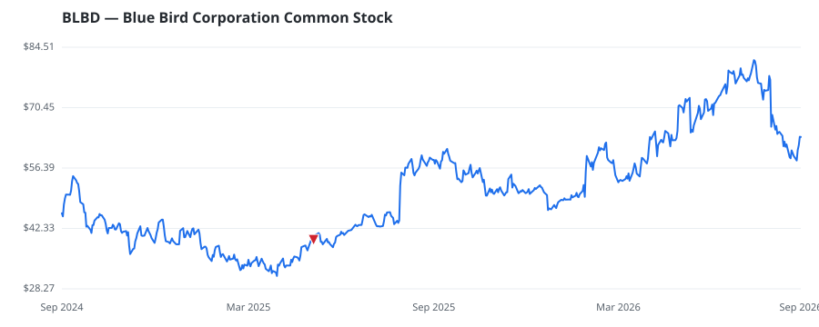

bullish · bearish · n/a — dots: price>SMA10 · SMA10>SMA50 · SMA50>SMA200 · up>down volume (20d)
Automobiles & Components · mid cap

Blue Bird Corp is an American bus manufacturing company. It is an independent designer and manufacturer of school buses. The company operates in two segments; the Bus segment which involves the design, engineering, manufacture, and sales of school buses and extended warranties; and the Parts segment which includes the sales of replacement bus parts. Geographically, the company generates a majority of its revenue from its customers in the United States and the rest from Canada and Rest of the world. TRUCK & BUS BODIES · website
| Revenue | $1.5B | Net income | $127.7M |
|---|---|---|---|
| Operating income | $167.2M | Diluted EPS | $3.88 |
| Assets | $625.3M | Equity | $255.4M |
This name produced 0.0% of the ranked funds’ total alpha.
| Fund | Fund alpha vs SPY | Position | % of book |
|---|---|---|---|
| Prospect Capital Advisors, LLC | +20% | $7M | 3.4% |
| NKCFO LLC | +15% | $0M | 0.1% |
Hedge data: SEC EDGAR 13F · ranked funds beat SPY in >50% of their quarters · fund alpha = mirror-portfolio return minus SPY.